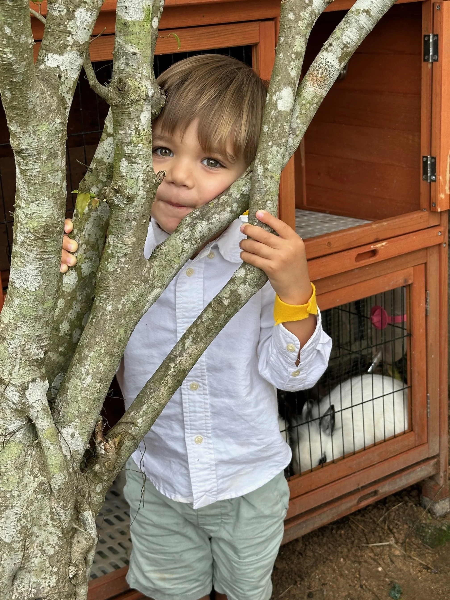
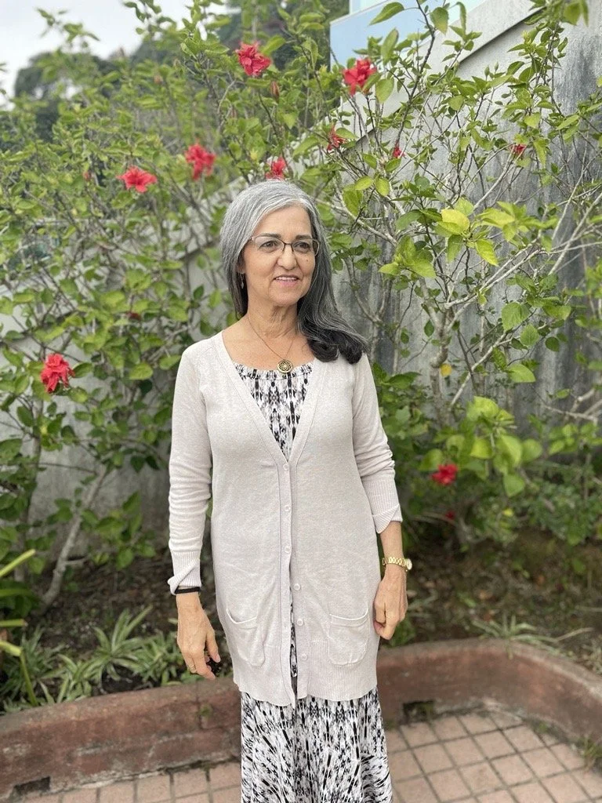
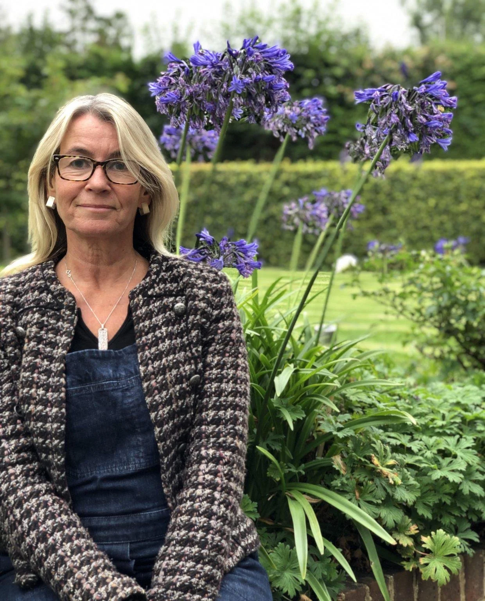

CFI Level 4 Diploma in
Integrative Early Childhood
Pedagogy (EYE)
Steiner Waldorf Pathway
Crossfields Institute, UK, is the awarding body for this Diploma. It is also registered with the International Association of Steiner Waldorf Early Childhood Education (IASWECE).
The extended units were co-created by Julie Lam, founder of Highgate House School and Crossfields Institute, UK.
Ofqual Recognised · UK EYE status
This Diploma empowers adults to profoundly impact children's wellbeing through deeper understanding of human development. Building on 20+ years of success as a UK Steiner Waldorf qualification, our programme uniquely addresses the evolving needs of today's children, parents, and educators.
This transformative journey awakens your capacity to:
- Understand children's developmental needs at each stage
- Create nurturing environments that support natural growth
- Develop authentic presence in your work with children
- Build meaningful connections with families and colleagues
- Transform challenges into opportunities for growth
Our experienced tutors bring this time-tested wisdom to life, making it relevant and accessible for modern educational settings while maintaining the depth of Waldorf principles.
The course is suitable for you if:
Whether you wish to qualify in Waldorf early years education or you wish to understand the early years from a Waldorf perspective:
- You are a parent or professional wishing to support children holistically in the family and other settings
- You work in mainstream education but wish to understand Waldorf principles and practice in the early years
- You are a parent or professional wishing to take up early childhood work in the future
- You want to qualify as a recognised Early Years Educator in the UK and become a group leader in a kindergarten
Part time over 2 years for the full UK Level 4 Diploma
Available without assignments for those who prefer to audit
Units of specialisation available separately — count towards CPD hours
Online, recorded, live, and self-study — designed to fit around your life
Individual Units can be taken by parents wishing to understand children better and count towards CPD in other areas of work. View our CPD courses →

A qualification with standing.
This teacher training qualification is on the official registered list of recognised qualifications in the UK (known as Ofqual), granting EYE (Early Years Educator) status in the UK.
The full specification of course content and description can be found at the following link:
It is a matter of discretion for individual employers to recognise any qualification to which this course may lead.
Meet our tutors.

Delia Sesiu
With over 26 years as a Steiner Waldorf Early Years practitioner, Delia brings profound insight into nurturing childhood's sacred potential. Invited by Julie Lam to strengthen the anthroposophical foundations at Highgate House School, she joined as a core tutor for the Conscious Teaching Diploma after 18 years pioneering kindergarten programmes and teacher training in South Africa.
Working closely with Julie, Delia helps adults deepen their understanding of early childhood's transformative nature. Their collaborative work creates powerful online learning experiences that illuminate the essential needs of young children. Her expertise spans anthroposophy, eurythmy, and extensive experience in Camphill communities.
Amy Punton
Amy combines over 20 years of Steiner Waldorf early years expertise with a deep connection to Hong Kong, where she was raised and now raises her own two daughters. After UK training in mainstream education, she joined Highgate House in 2003, becoming one of the first graduates of the IASWECE-qualified Waldorf educator training brought to Hong Kong by founder Julie Lam.
Under Julie's mentorship, Amy deepened her work with the birth-to-three phase, gradually taking leadership of the parent-child programmes Julie had established. Her approach weaves together Waldorf wisdom with holistic practices including infant massage, reiki, and sound therapy.

Rowena Markies
Rowena and Julie's friendship began over 18 years ago when their sons attended the same Waldorf School class. They share a deep commitment to authentic parenting, supporting both children and parents in their learning journey.
With over three decades in education, Rowena's path from primary teacher to neurodevelopment therapist was inspired by her own children's learning challenges. Her expertise in sensory and reflex integration brings a unique perspective on movement as a child's first language.
Drawing from her experience across Mainstream, Independent, and Steiner schools, Rowena now dedicates herself to empowering parents through consultations and workshops, helping families understand and navigate their children's learning challenges.
There is no better time to deepen your practice.
Applications are taken on a rolling basis. We keep groups small so that every participant receives genuine attention and support throughout the journey.